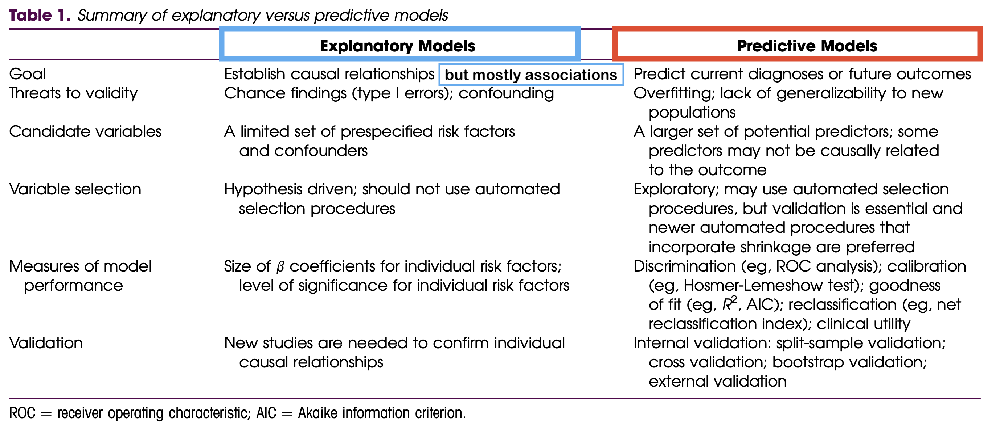
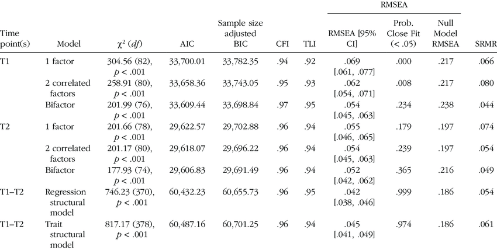

Lesson 12: Model/Variable Selection
Learning Objectives
- Understand the motivation for model selection, including bias-variance trade off and alignment of research goals (association vs. prediction)
- Explain the general process or idea behind different model selection techniques
- Recognize common model fit statistics and understand what they measure
Learning Objectives
- Understand the motivation for model selection, including bias-variance trade off and alignment of research goals (association vs. prediction)
- Explain the general process or idea behind different model selection techniques
- Recognize common model fit statistics and understand what they measure
Why can’t I just throw in all the variables into my model?
First, let’s think about the number of observations in our dataset
For example: In the Gapminder dataset, I can use an indicator for each country
Remember that each country is an observation
So we have a perfectly fit model - a covariate for each observation
But we cannot generalize this to any other countries
And we haven’t identified any meaningful relationships between life expectancy and other measured characteristics
More covariates in the model is not always better
- Overfitting the data limits our generalizability and prevents us from answering research questions
Model Complexity vs. Parsimony
Suppose we have \(p = 30\) covariates (in the true model) and n = 50 observations. We could consider the following two alternatives:
- We could fit a model using all of the covariates.
- In this case, \(\widehat\beta\) is unbiased for \(\beta\) (in a linear model fit using OLS). But \(\widehat\beta\) has very high variance.
- We could fit a model using only the five strongest covariates.
- In this case, \(\widehat\beta\) will be biased for \(\beta\), but it will have lower variance (compared to the estimate including all covariates)

Bias-variance trade off
Recall mean square error is a function of SSE (sum of squared residuals)
\[ MSE = \dfrac{1}{n} \sum_{i=1}^{n} \big(Y_i - \widehat{Y}_i \big)^2 \]
MSE can also be written as a function of the bias and variance
\[ MSE = \text{bias}\big(\widehat\beta\big)^2 + \text{variance}\big(\widehat\beta\big) \]
For the same data:
More covariates in model: less bias, more variance
Less covariates in model: more bias, less variance
Out goal: find a model with just the right amount of covariates to balance bias and vairance

Some important definitions
Model selection: picking the “best” model from a set of possible models
- Models will have the same outcome, but typically differ by the covariates that are included, their transformations, and their interactions
Model selection strategies: a process or framework that helps us pick our “best” model
- These strategies often differ by the approach and criteria used to the determine the “best” model
- Overfitting: result of fitting a model so closely to our particular sample data that it cannot be generalized to other samples (or the population)
Model Selection basics (slide adjusted from Jodi Lapidus)
“Because models always fall far short of the complex reality under study, there are no best or optimal strategies for modeling.”
Not all statistical texts provide practical advice on model development
- A lot of resources include methods/code to compare models, but does not include much advice re: selecting which model to ultimately use.
- Other texts are sparse on details or incorporate simplistic approaches
Model development strategy should align with research goals
- Prediction vs. Estimating Association
- Strategy may depend on study design and data set size
The goals of association vs. prediction
Association / Explanatory / One variable’s effect
Goal: Understand one variable’s (or a group of variable’s) effect on the response after adjusting for other factors
Mainly interpret the coefficient of the variable that is the focus of the study
- Interpreting the coefficients of the other variables is not important, but can help bring context
Any variables not selected for the final model have still been adjusted for, since they had a chance to be in the model
Example: How is body mass of a penguin associated with flipper length?
Prediction
Goal: to calculate the most precise prediction of the response variable
Interpreting coefficients is not important
Choose only the variables that are strong predictors of the response variable
- Excluding irrelevant variables can help reduce widths of the prediction intervals
Example: What is the flipper length of a penguin with body mass of 3000 g (and all its other characteristics)?
Model building for association vs. prediction
More information on the two analysis goals:

If you ever get the chance, check out Dr. Kristin Sainani’s series on Statistics
Poll Everywhere Question 1
Model selection strategies for continuous outcomes
Association / Explanatory / One variable’s effect
Selection of potential models is tied more with the research context with some incorporation of prediction scores
Pre-specification of multivariable model
Purposeful model selection
- “Risk factor modeling”
Change in Estimate (CIE) approaches
- Will learn in Survival Analysis (BSTA 514)
Prediction
Selection of potential models is fully dependent on prediction scores
Automated strategies
- Stepwise selection (forward/backward)
- You’ll see these a lot, but they’re not really good methods
- Best subset
- Regularization techniques (LASSO, Ridge, Elastic net)
- Stepwise selection (forward/backward)
For categorical outcomes, there are more prediction model selection strategies (will learn more in BSTA 513)
- Examples: Decision trees, Random forest, Neural networks, K-means
Learning Objectives
- Understand the motivation for model selection, including bias-variance trade off and alignment of research goals (association vs. prediction)
- Explain the general process or idea behind different model selection techniques
- Recognize common model fit statistics and understand what they measure
Pre-specification of multivariable model (slide adjusted from Jodi Lapidus)
In a clinical trial, we often have to write and finalize a statistical analysis plan (SAP) before the trial starts
If we wish to compare treatment effects adjusted for covariates, all covariates typically specified in advance
Example: Comparing effectiveness of 3-drug vs. 2-drug regimen for delaying AIDS onset or death. Covariates such as severity of HIV infection at baseline would have been specified in advance.
Variables such as study site, as well as any randomization stratification variables are common covariates.
In these cases, only a limited number of multivariable models are fit and reported
- Do not perform all the model building steps outlined in Hosmer and Lemeshow texts
Purposeful model selection (slide adjusted from Jodi Lapidus)
Can use this type of model selection for any type of regression
Careful, well-thought out variable selection process
- Considers both confounding and interaction, as well as checking model assumptions, fit, etc.
Often a reasonable strategy, especially in epidemiology and more exploratory clinical studies
- However, not always appropriate!
- E.g. clinical trials with model specified in advance. (pre-specified model)
- This is the selection process that we will focus on in this class!
Change in estimate (CIE) approach (slide adjusted from Jodi Lapidus)
CIE strategies select covariates on the basis of how much their control changes exposure effect estimates
- Observed change is presumed to measure confounding by the covariate.
What estimate?
- H/L text suggest using coefficients from the model
- We typically use the coefficient estimate from the explanatory variable that we are most interested in
What magnitude change is ”important”?
- H/L text suggest 10%
One must choose an effect measure to judge change importance, where “importance” needs to be evaluated along a contextually meaningful scale
Accurate assessment of confounding may require examining changes from removing entire sets of covariates
- Add in or eliminate candidate confounders one at time?
- Add in or eliminate candidate confounders in sets?
Stepwise selection (slide adjusted from Adrianna Westbrook)
This is an incredibly common approach that statisticians use, often because it is an older and more recognized method
- BUT IT IS ALSO ONE OF THE WORST MODEL SELECTION STRATEGIES!!
Major disadvantages to stepwise selection:
- Prone to overfitting
- Biased estimates
- Cements the wrong idea that we are looking for our “most significant” covariates
Predictors/covariates are added or removed one at time if they are below a certain threshold (usually p-value below 0.10 to 0.20)
Stepwise selection: two common approaches
I will introduce two of the approaches so that you understand the general process if a collaborator ever mentions stepwise selection
Forward selection:
For \(p\) cvariates potential covariates, run all simple linear regressions:
- \(Y= \beta_0 + \beta_1 X_1 + \epsilon\) through \(Y= \beta_0 + \beta_1 X_{p} + \epsilon\)
- Include the \(X_i\) with the lowest p-value (assuming it is below the threshold)
Now run \(Y= \beta_0 + \beta_1 X_i + \beta_2 X_1 + \epsilon\) through \(Y= \beta_0 + \beta_1 X_i + \beta_2 X_{p} + \epsilon\) and enter the next \(X_j\) with the lowest p-value
Continue process until no more predictors come back with a p-value below the threshold
Backward selection:
- Start with a full model (\(Y= \beta_0 + \beta_1 X_1 + ... + \beta_p X_p + \epsilon\)) and remove predictor with the highest p-value (assuming it is above the threshold)
- Repeatedly remove the variable with the highest p-value until all remaining variables meet the stopping criteria (are below the threshold)
Best subset (slide adjusted from Adrianna Westbrook)
I don’t see this approach very often
Quite literally making subsets of the data and using the “best” one
General steps:
- Run every possible model fitting 1 to all possible \(p\) predictors/covariates
- You can limit number of potential predictors
- \(2^p\) = total number of models where \(p\) = number of predictors
- You will get the best fitting model within each category (i.e., 1 predictor model, 2 predictor model,…, \(p\) predictor model)
- Then have to find the best fitting model between the best models from each category
Major disadvantages to best subset:
- Does not account for interactions
- Needs to run a lot of models (takes A LOT of time)
Regularization techniques
- Regularization techniques (LASSO, ridge, elastic net) adds a penalization that shrinks (or regularizes) coefficients down to reduce overfitting
| LASSO (Least About Shrinkage and Selection Operator) | Ridge | Elastic Net | |
| Penalization | L-1 Norm, uses absolute value | L-2 Norm, uses squared value | Best of both worlds, L-1 and L-2 used |
| Pro’s | Reduces overfitting, will shrink coefficient to zero | Reduces overfitting, handles collinearity, can handle k>n | Reduces overfitting, handles collinearity, handles k>n, shrinks coefficients to zero |
| Con’s | Cannot handle k>n, doesn’t handle multicollinearity well | Does not shrink coefficients to zero, difficult to interpret | More difficult for R to do than the other two (but not really that bad) |
Poll Everywhere Question 2
Learning Objectives
- Understand the motivation for model selection, including bias-variance trade off and alignment of research goals (association vs. prediction)
- Explain the general process or idea behind different model selection techniques
- Recognize common model fit statistics and understand what they measure
Introduction to model fit statistics
So far we have compared models using the F-test
The F-test is a great way to compare models that are nested
- Basically, this means that the “full” model contains all the covariates that the “reduced” model contains
- The full model will have additional covariates, but the covariates in the reduced is a subset of the covariates in the full
What if we want to compare models that are not nested?
There is a special group of fit statistics that can help us compare models
Note: these are sometimes used in the model building process (within one strategy)
Helpful if we want to compare selected models across strategies
Helpful if we have a few “final” models with different covariates that we want to compare
Common model fit statistics
The following model fit statistics combine information about the SSE, the number of parameters in the model, and the sample size
For Mallow’s Cp, AIC, and BIC: smaller values indicate better model fit!
For Adjusted R-squared: larger values indicate better model fit!
| Fit statistic | Equation | R code |
|---|---|---|
| R-squared / Adjusted R-squared | \(Adj. R^2 = 1 - \frac{SSE/(n-p-1)}{SSY/(n-1)}\) | Within summary(model_name) |
| Mallow’s \(C_p\) | \(C_p = \Bigg[ \dfrac{\widehat\sigma^2_p}{\widehat\sigma^2_{max}} - 1 \Bigg](n-p) + p\) | ols_mallows_cp() |
| Akaike information criterion (AIC) | \(AIC = n\log(SSE) - n \log(n) + 2(p+1)\) | AIC(model_name) |
| Bayesian information criterion (BIC) | \(BIC = n\log(SSE) - n\log(n) + log(n)\cdot(p+1)\) | BIC(model_name) |
- We don’t need to know the exact formulas for them!
Common model fit statistics
There is no hypothesis testing for these fit statistics
Only helpful if you are comparing models
Works for nested and non-nested models
Common to report all or some of them
All of the fit statistics will not necessarily reach a consensus about the best fitting model
- Each weigh SSE, number of parameters, and number of observations differently
